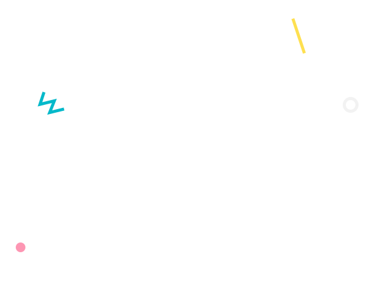
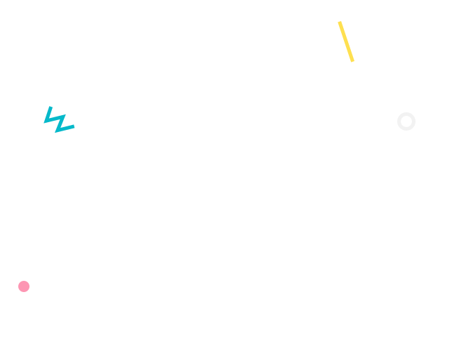
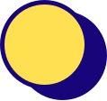
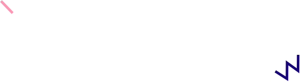
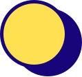
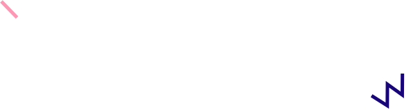

- Yunsoo
Kim - Yunsoo
Kim - Yunsoo
Kim - Yunsoo
Kim
- Yunsoo
Kim - Yunsoo
Kim - Yunsoo
Kim - Yunsoo
Kim
Research Scientist


A BRIEF SUMMARY ABOUT ME


Hello. Thanks for visiting my website.
I'm Yunsoo Kim, a professional (senior research scientist) and NLP group leader at LG Chem,
and a co-founder of Torrey Pines Co., Ltd. (microbiome science cosmetics company).
I received my MSc in Bioinformatics and Theoretical Systems Biology from Imperial College London,
where I developed a method to analyze -omics time series using machine learning with Professor Tim Ebbels,
and I developed a method to infer networks from metagenomics abundance data with Dr. John Pinney and Dr. Virginia Fairclough.
I received my B.S. in Systems Biology with Honors (as well as concentration in Bioinformatics and Pre-Health Plan) from Case Western Reserve University,
where I made an assembly of Marama chloroplast from Next-gen sequencing reads with Professor Christopher Cullis.
My current work is focused on natural language processing (NLP) and its applications in chemistry, materials science, and synthetic biology.
My research interest is geometric deep learning in computational biology,
specifically in graph representation learning using transformer models.
PLACES I LIVED IN
- 2017 ~
- 2015~2016
- 2012~2015
- 2008~2012
- 2007~2008
- ~ 2006
- Seoul, South Korea
- London, UK
- Cleveland, OH, US
- New City, NY, US
- Hamilton, ON, Canada
- Cheonan, South Korea
SKILLS
Python
Docker
HTML
Deep Learning
Linux
Mongo DB
Highlited Works
For each work, a brief description is provided as well as external links, if possible.
 


LG Chem NLP Group Leader
2020 ~ Present
Working on language (pre-trained) models in chemistry, materials science, and synthetic biology patents and literature.
Developing a system called CLUE (chemical langauge understanding expert),
which is an artificial reading system empowered by the fine-tuned models such as chemical entity recognition models.
Received 1st place in 2021 LG AI DX IDEAthon business applications sector.
Plant Disease Deep Learning
Plant disease classification and plant disease severity diagnosis 2019
Severity diagnosis was also treated as a classification problem.
Made an ensemble model of ResNext and EfficientNet (transfer learning of ImageNet pre-trained models).
Used guided grad-cam to provide an explanation for the classification result.
Made a web service for the classification model inference.
Protein Toxicity Prediction
Early Allergen and Toxin assessment system 2018
Developed a neural network to predict protein toxicity with protein amino acid sequence as input.
22.50 F1 score higher and 22 times faster than SVM (which was the SOTA).

Torrey Pines
Co-founder 2015 - present & CEO 2016 - 2017
Torrey Pines is a cosmetics company specialized in hair care products.
Introduced microbiome science to hair care cosmetics marketing.
Successfully exported to Vietnam and Cambodia in 2017.
Launched a new brand called "Bota nouveau" in Cambodia (2019) and Korea (2020).

Metabolomics Time Series
Computational Bioinformatics Laboratory 2016
Biological processes are temporal events with dynamic and complex behaviors.
Omics data such as RNA-seq and NMR data can be collected at multiple time points to understand changes of biological processes over time.
There was no established analysis methodology in omics time series.
Machine learning (clustering) based time series analysis.
Tested the method using 81 simulated scenarios.
Extended the method to include network inference.
Metagenomics Network
Theoretical Systems Biology Laboratory 2016
Humans have diverse microorganisms, and the microorganisms interact with each other.
To study the interactions leading to diseases, we made a novel method using proportionality to infer microbiome networks.
The method can generate a differential network (PAPER 1) and a co-occurrence network (PAPER 2).
The best precision among 9 methods (such as spearman correlation) for network inference.
Made PLANET (ProportionaLity Analysis NEtworks Tool) web server for a wider community
More details in this group report for PLANET.
Marama Chloroplast Genome
Undergraduate Research 2014 - 2015
Marama bean is a undomesticated legume in arid regions of Southern Africa.
Used both Illumina short reads and Pacbio long reads to assemble the chloroplast genome.
Found a unique inversion not present in any other legumes.
Remarkable
Memories

Received DX Frontier 1st place in applications sector
Given by LG Science Park
Was part of LG AI IDEAthon
Handed out the award in Metaverse.
DX Frontier 1st Place

Received the Best Award in LG for AI research
Given by LG Group Chairman
Due to COVID19, LG Chem CEO
handed out the award.
LG AWARD
Launched brand called Bota nouveau
Exported to Cambodia
Introduced microbiome science
to hair care cosmetics.
It means new from nature
Actively used microbiome science
for marketing.
Bota nouveau
Mentoring of 4 researchers at LG in 2020
2 of them from LG Chem
1 is from LG Electronics, and 1 from LG Housys
One researcher received best practice from the mentoring program.
He continued working on the research and receiced best practice from LG Chem in 2021.
Mentor Experiene
One of the three panelists at LG Academy for DX talks
It was for employees from all LG companies.
Talked about how employees should apply AI and DX in their work.
I emphasized the importance of data.
Also talked about what leaders should expect from AI and DX.
DX Talks Panelist

1st place at AI Hackathon (image classification problem)
It was a part of AI course organized by Seoul National University for LG Chem reseachers.
Seoul National Uni AI Hackathon
Feel Free to
Contact Me!
- Curriculum Vitae
- +82 1066116768
- kys.930303 [at] gmail.com

 


